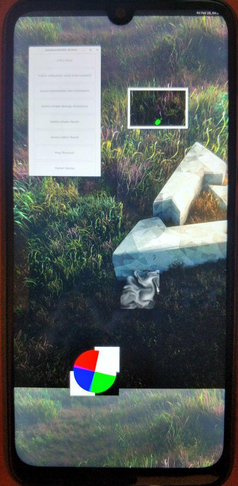

Xiaomi Redmi Note 7 (xiaomi-lavender)
|
 Redmi Note 7 | |
| Manufacturer | Xiaomi |
|---|---|
| Name | Redmi Note 7 |
| Codename | xiaomi-lavender |
| Released | 2019 |
| Category | testing |
| Original software | Android 9, MIUI 10 |
| postmarketOS kernel | 5.17.0 |
| Hardware | |
| Chipset | Qualcomm SDM660 Snapdragon 660 |
| CPU | 8-core (4x 2.2 GHz Kryo 260 & 4x 1.8 GHz Kryo 260) |
| GPU | Adreno 512 |
| Display | 1080 x 2340 |
| Storage | 32/64/128 GB |
| Memory | 3/4/6 GB |
| Architecture | aarch64 |
{kind=link}
| USB Networking |
Works
|
|---|---|
| Flashing |
Works
|
| Touchscreen |
Works
|
| Display |
Works
|
| WiFi |
Broken
|
| FDE | |
| Mainline |
Partial
|
| Battery |
Broken
|
| 3D Acceleration |
Broken
|
| Audio |
Broken
|
| Bluetooth |
Broken
|
| Camera |
Broken
|
| GPS |
Broken
|
| Mobile data |
Broken
|
| SMS |
Broken
|
| Calls |
Broken
|
| USB OTG |
Works
|
| NFC |
Unavailable
|
| Accelerometer |
Broken
|
|---|---|
| Magnetometer | |
| Ambient Light | |
| Proximity | |
| Hall Effect | |
| Ir TX | |
|---|---|
| TrustZone | |
|
This device is based on Snapdragon 660. See the SoC page for common tips, guides and troubleshooting steps |
Contributors
Maintainer(s)
Users owning this device
How to enter flash mode
Bootloader Unlocking
Like other Xiaomi devices, the user will have to acquire the bootloader unlock key: https://en.miui.com/unlock
The device will not unlock if the device isn't 7 days old (from the time when your device connects to internet and powered on, and linked with Mi Account)
Recovery mode
- Turn the device off (or restart also works)
- Hold Volume Up and Power button
- Once you feel vibration and phone turns on, release Power button
- Keep holding Volume Up until you get to recovery.
Flashing (Download, Fastboot) mode
- Same as recovery, but this time hold the Volume Down and Power keys.
Fastboot boot
In theory pmbootstrap flasher boot allows to directly boot kernel through USB without flashing it, but does not currently work. Bootloader does not like something about kernel compression:
Bootloader UART logs during "pmbootstrap flasher boot":
Handling Cmd: boot Booting Into Mission Mode avb_slot_verify.c:432: DEBUG: Loading vbmeta struct from partition 'vbmeta'. Partition found: vbmeta avb_slot_verify.c:627: ERROR: vbmeta: Public key used to sign data rejected. avb_slot_verify.c:704: DEBUG: vbmeta: VERIFICATION_DISABLED bit is set. avb_slot_verify.c:317: DEBUG: dtbo: Loading entire partition. Partition found: dtbo State: Unlocked, AvbSlotVerify returned ERROR_PUBLIC_KEY_REJECTED, continue boot VB2: Authenticate complete! boot state is: orange VB2: boot state: orange(1) Display menu is not enabled! Device is unlocked, Skipping boot verification VB2: BootState = 1 ReadKeyInternal: gEfiSimpleTextInputExProtocolGuid handles = 3 ReadKeyInternal: Read KEY = 0x0 bootstate = 4 Cannot find GraphicsHandles. ImageWidth=1080,ImageHeight=1920,LogoPosX=0,LogoPosY=0 Avoid flicking for 2160x1080 images Cannot find GraphicsHandles. Render Splash [3360687] VB2: RenderSplashScreen end , BootState = 4 No Ffbm cookie found, ignore: Not Found Memory Base Address: 0x40000000 Decompressing kernel image start: 3360690 ms Error in decompression: Something went wrong while decompression Decompressing kernel image failed!!!
But it was reported to work for some people. Try it, might work for you
Installation
- Install pmbootstrap first on your PC
- make sure you have TWRP installed on the phone, it will help you to make backups:
- backup
boot,dtboandsystempartitions first from TWRP, something like this, for example, to SD card:
adb shell dd if=/dev/block/bootdevice/by-name/boot of=/external_sd/backups/orig_boot.img dd if=/dev/block/bootdevice/by-name/dtbo of=/external_sd/backups/orig_dtbo.img dd if=/dev/block/bootdevice/by-name/system of=/external_sd/backups/orig_system.img
- zap & reinit pmbootstrap (
pmbootstrap -y zap ; pmbootstrap init), choosexiaomi-lavenderas a device - proceed with installation as usual: reboot device to fastboot mode, then:
pmbootstrap install pmbootstrap flasher flash_kernel pmbootstrap flasher flash_rootfs pmbootstrap flasher flash_vbmeta
For mainline kernel only (where nothing works except UART):
fastboot erase dtbo
And then
fastboot reboot
Tested UIs
- weston
- xfce4
- plasma-mobile
Running Plasma Mobile UI on framebuffer backend
See Plasma_Mobile#Software_rendering
Photos
Lavender booting mainline
PlaMo on fbdev 1
PlaMo on fbdev 2
X11 (Xfce) on fbdev
Plasma Desktop on fbdev
{kind=link}
{kind=link}
{kind=link}
{kind=link}
{kind=link}
Additional info
Partition list
Partition list
| Device | Label | Size in blocks | Size in bytes | Stock FS |
|---|---|---|---|---|
| mmcblk0p1 | switch | 8 | 8192 | |
| mmcblk0p2 | dpo | 8 | 8192 | |
| mmcblk0p3 | fsc | 8 | 8192 | |
| mmcblk0p4 | limits | 32 | 32768 | |
| mmcblk0p5 | ssd | 32 | 32768 | |
| mmcblk0p6 | sec | 20 | 20480 | |
| mmcblk0p7 | vbmeta | 64 | 65536 | |
| mmcblk0p8 | vbmetabak | 64 | 65536 | |
| mmcblk0p9 | storsec | 128 | 128K | |
| mmcblk0p10 | storsecbak | 128 | 128K | |
| mmcblk0p11 | apdp | 256 | 256K | |
| mmcblk0p12 | msadp | 256 | 256K | |
| mmcblk0p13 | keystore | 512 | 512K | |
| mmcblk0p14 | frp | 512 | 512K | |
| mmcblk0p15 | rpm | 512 | 512K | |
| mmcblk0p16 | rpmbak | 512 | 512K | |
| mmcblk0p17 | hyp | 512 | 512K | |
| mmcblk0p18 | hypbak | 512 | 512K | |
| mmcblk0p19 | pmic | 512 | 512K | |
| mmcblk0p20 | pmicbak | 512 | 512K | |
| mmcblk0p21 | cmnlib | 1024 | 1024K | |
| mmcblk0p22 | cmnlibbak | 1024 | 1024K | |
| mmcblk0p23 | cmnlib64 | 1024 | 1024K | |
| mmcblk0p24 | cmnlib64bak | 1024 | 1024K | |
| mmcblk0p25 | abl | 1024 | 1024K | |
| mmcblk0p26 | ablbak | 1024 | 1024K | |
| mmcblk0p27 | dip | 1024 | 1024K | |
| mmcblk0p28 | ddr | 1024 | 1024K | |
| mmcblk0p29 | toolsfv | 1024 | 1024K | |
| mmcblk0p30 | devcfgbak | 1024 | 1024K | |
| mmcblk0p31 | devcfg | 1024 | 1024K | |
| mmcblk0p32 | tz | 4096 | 4096K | |
| mmcblk0p33 | tzbak | 4096 | 4096K | |
| mmcblk0p34 | mdtpsecapp | 4096 | 4096K | |
| mmcblk0p35 | mdtpsecappbak | 4096 | 4096K | |
| mmcblk0p36 | keymaster | 1024 | 1024K | |
| mmcblk0p37 | keymasterbak | 1024 | 1024K | |
| mmcblk0p38 | bluetooth | 1024 | 1024K | vfat |
| mmcblk0p39 | lsti | 2048 | 2048K | |
| mmcblk0p40 | xbl | 3584 | 3584K | |
| mmcblk0p41 | xblbak | 3584 | 3584K | |
| mmcblk0p42 | misc | 4096 | 4096K | |
| mmcblk0p43 | devinfo | 8192 | 8192K | |
| mmcblk0p44 | logfs | 8192 | 8192K | |
| mmcblk0p45 | fsg | 8192 | 8192K | |
| mmcblk0p46 | modemst1 | 8192 | 8192K | |
| mmcblk0p47 | modemst2 | 8192 | 8192K | |
| mmcblk0p48 | dsp | 16384 | 16.0M | vfat |
| mmcblk0p49 | bk1 | 24576 | 24.0M | |
| mmcblk0p50 | mdtp | 32768 | 32.0M | |
| mmcblk0p51 | bk2 | 16384 | 16.0M | |
| mmcblk0p52 | dtbo | 8192 | 8192K | |
| mmcblk0p53 | dtbobak | 8192 | 8192K | |
| mmcblk0p54 | splash | 65536 | 64.0M | |
| mmcblk0p55 | persist | 32768 | 32.0M | ext4 |
| mmcblk0p56 | persistbak | 32768 | 32.0M | ext4 |
| mmcblk0p57 | logdump | 65536 | 64.0M | |
| mmcblk0p58 | modem | 196608 | 192M | vfat |
| mmcblk0p59 | rawdump | 131072 | 128M | |
| mmcblk0p60 | boot | 65536 | 64.0M | |
| mmcblk0p61 | recovery | 65536 | 64.0M | |
| mmcblk0p62 | cache | 262144 | 256M | ext4 |
| mmcblk0p63 | system | 3670016 | 3584M | ext4 |
| mmcblk0p64 | vendor | 2097152 | 2048M | ext4 |
| mmcblk0p65 | cust | 851968 | 832M | ext4 |
| mmcblk0p66 | userdata | 22802415 | 21.7G | encrypted (dm-0) |
| mmcblk0rpmb | 4096 |
Android Verified Boot (vbmeta)
This device is using Android_Verified_Boot_(AVB) so, if you did not flash any custom Android ROM, you may need to flash vbmeta partition with vbmeta.img with verification disabled flag. pmbootstrap now can generate such empty vbmeta image and flash it with one command:
$ pmbootstrap flasher flash_vbmeta
DTBO partition
This device is using a dedicated partition to store the Device Tree Blob Overlay. Read more at https://source.android.com/devices/architecture/dto/partitions .
Update: looks like dtbo partition is not used during boot by LineageOS's kernel, because it is using appended DTB (CONFIG_BUILD_ARM64_APPENDED_DTB_IMAGE=y)
Update2: device tree from dtbo partition is used by bootloader to apply some fixups on top of appended dtb. Bootloader tries to apply overlay dtb from dtbo partition over a dtb found appended to kernel, and if it fails to do so, it falls back into fastboot mode. Example bootloader debug UART output in that case:
Memory Base Address: 0x40000000 Decompressing kernel image start: 2700 ms Decompressing kernel image done: 2852 ms ufdt apply overlay failed Launching fastboot
See also Zhuowei's notes on creating custom dtbo partition: https://gitlab.com/zhuowei/dtbo-google-crosshatch-mainline
For mainline kernel just fastboot erase dtbo works. Bootloader ignores missing dtbo, example output when dtbo partition is erased:
Memory Base Address: 0x40000000 Decompressing kernel image start: 2641 ms Decompressing kernel image done: 2793 ms Dtbo hdr magic mismatch 0, with D7B7AB1E Best match DTB tags 317/00020008/0x00000000/0/1001B/102001A/0/0/(offset)0x97128304/(size)0x00000653 Using pmic info 0x1001B/0x102001A/0x0/0x0 for device 0x2001B/0x102001A/0x0/0x0 Memory Base Address: 0x40000000 smem protocol = 9C2FA0A0 board_id1 is 1 board_id2 is 1 board_id3 is 0 board_id is 1 get_boardid_from_smem,SUCCESS ,board_id=0x102,cpu_id=0x39148C8C,hwdefined=0 PON Reason is 17 cold_boot:1 charger path: 1 ...(proceeding to normal boot procedure)...
For downstream kernel, leave stock dtbo partition untouched.
Bootloader cmdline
Stock bootloader is doing nasty things with kernel command line: it passes a lot of arguments that make booting custom OS (like postmarketOS) impossible
Full list of stock command line parameters:
ramoops_memreserve=4M rcupdate.rcu_expedited=1 console=ttyMSM0,115200,n8 androidboot.console=ttyMSM0 earlycon=msm_serial_dm,0xc170000 androidboot.hardware=qcom user_debug=31 msm_rtb.filter=0x37 ehci-hcd.park=3 lpm_levels.sleep_disabled=1 sched_enable_hmp=1 sched_enable_power_aware=1 service_locator.enable=1 swiotlb=1 firmware_class.path=/vendor/firmware_mnt/image loop.max_part=7 androidboot.selinux=permissive buildvariant=eng androidboot.verifiedbootstate=orange androidboot.keymaster=1 root=PARTUUID=2a7f6d6d-1c23-febe-7efb-9ccfa1432ace androidboot.bootdevice=c0c4000.sdhci androidboot.serialno=ac1dde4e androidboot.cpuid=0x39148c8c androidboot.dp=0x0 androidboot.baseband=sdm mdss_mdp.panel=1:dsi:0:qcom,mdss_dsi_nt36672a_tianma_fhdplus_video:config0:1:none:cfg:single_dsi skip_initramfs rootwait ro init=/init androidboot.dtbo_idx=0 androidboot.fpsensor=fpc androidboot.secureboot=1 androidboot.hwc=Global androidboot.hwversion=1.29.0 androidboot.hwlevel=MP androidboot.hwdevice=lavender
ramoops_memreserve=4M comes from defconfig, next from boot.img, others (starting with first androidboot. and below) come from bootloader directly.
Harmful kernel command line params from bootloader
Options like root=, skip_initramfs make kernel look for a specific partition to mount at /, skipping initramfs, which is incompatible with default booting methods of postmarketOS. That's why some tricky patches are needed like by opendata26: init: ignore bootloader cmdline params for mounts
Some info on skip_initramfs kernel cmdline parameter: https://forum.xda-developers.com/apps/magisk/pixel-2-pixel-2-xl-support-t3697427/post74361728#post74361728
Way to get boot log
This device known to ship with the oem getlog fastboot command.
This is not a trivial command to use, but it is extremely useful as it allows side-stepping the need to boot in a known working system to use the ramoops console. The output of the command is a jumble, but is still usable for figuring out early boot issues. It is much better than having to rely on a booted system to get the information, but still not as good as having a dedicated serial access.
Example usage follows.
$ fastboot oem getlog 2>&1 (bootloader) [ 0.000000] Booting Linux on physical CPU 0x0 [ 0.000 (bootloader) 000] Initializing cgroup subsys cpuset [ 0.000000] Initi (bootloader) alizing cgroup subsys cpu [ 0.000000] Initializing cgrou (bootloader) p subsys cpuacct [ 0.000000] Initializing cgroup subsys (bootloader) schedtune [ 0.000000] Linux version 4.4.153 (nixbld@loca (bootloader) lhost) (gcc version 4.9.4 (GCC) ) #2 SMP PREEMPT Sat Nov 23 (bootloader) 20:31:33 UTC 2019 [ 0.000000] Boot CPU: AArch64 Process (bootloader) or [51af8014] [...]
As the output of the command is on stderr, here's how to output to a file.
$ fastboot oem getlog > log.txt 2>&1
It is unknown if there are ways to make the output better. (Apply some kind error correction algorithm?)
EDIT: seems to not work for me, whatever you do, the output is:
$ fastboot oem getlog
(bootloader) [Macle]Maybe no last kmsg
OKAY [ 0.000s]
Finished. Total time: 0.000s
Probably needs a crash? But I can read pstore-console (dmesg) logs from booted TWRP recovery fine..
{kind=link}
{kind=link}
Getting logs through debug UART
You have to disassemble the phone (just removing back cover is enough). You'll have to heat up edges of the back cover (as shown in disassembling video, see Links below) before trying to remove it. Be careful! It is made of glass! Also be careful about fingerprint sensor connector, it is connected to a back cover you are trying to remove. Don't rip it.
In the center you will see 4 test points that are available. (See the picture) Two bigger ones (0.8mm) are EDL (FORCE_USB_BOOT) pins. UART test points are two smaller ones on the left (0.5mm). TP11 is UART TX (gpio 4), TP10 is UART RX (gpio 5). GND is that whole metal shielding, that covers the center of the board. So, to get debug logs from UART it is enough to connect UART TX from the board to RX pin on the converter, and connect GND between phone and GND pin on the converter.
Links
- pmaports!1095 Initial merge request
- Device package
- Kernel package
- Mainline kernel package
- pmaports#494 How to make Wi-Fi work?
- Current mainline kernel development branch
- Mainline development BLOG
- NixOS-mobile lavender MR
- https://www.youtube.com/watch?v=6GqXqW2Nygc Disassembling video (Rus)
- https://www.anandtech.com/show/11338/qualcomm-announces-snapdragon-660-630-mobile-platforms
- List of mobile phones on SDM660 SoC: 1, 2